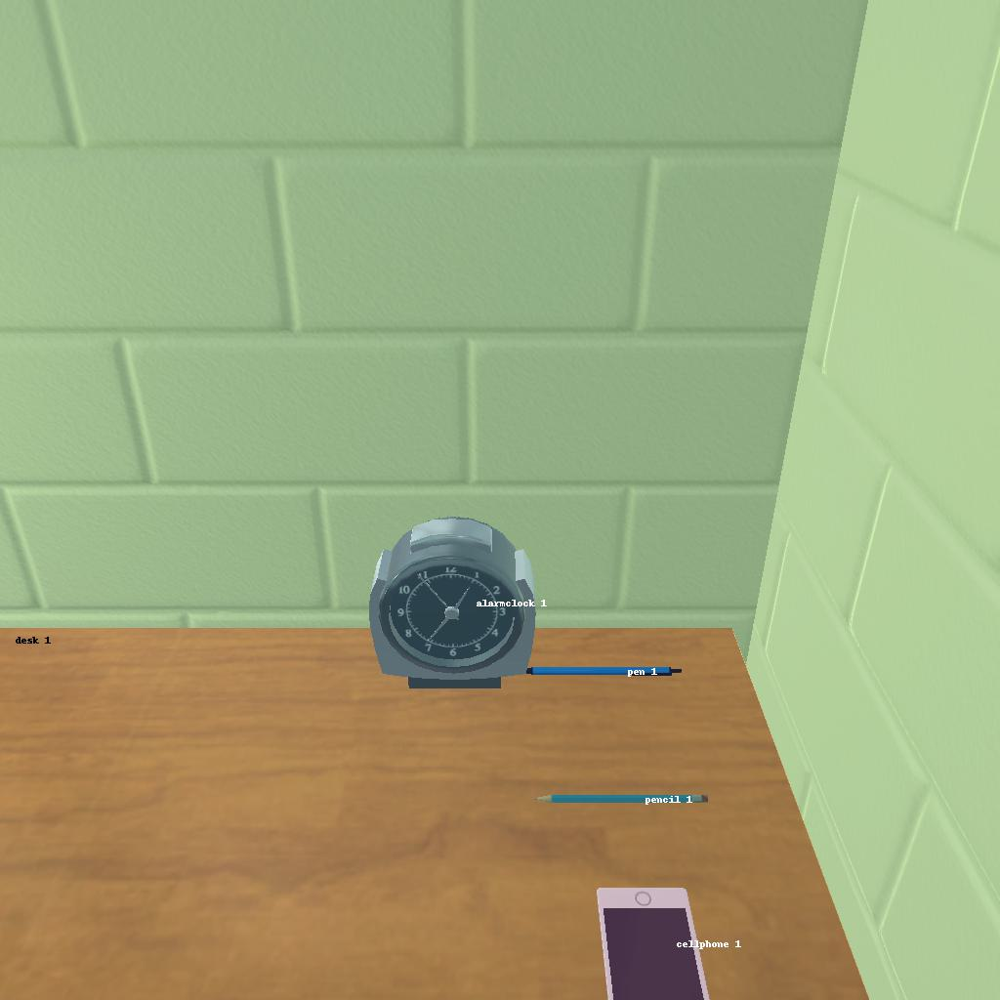

---------------------------------------------------------task: 8---------------------------------------------------------
--------------------------------------------------------------------------------------------------------------------------------------------------------------------
--------------------------------------------------------------------------------------------------------------------------------------------------------------------
Step:--------------------------------------------------------------------------1-------------------------------------------------------------------------------
----------------------------------------
VLM Prompt:
Image1:
Image2:
**Instruction**
1. Analyze the provided image to identify all visible household objects, focusing on those relevant to the task description "put some laptop on desk."
2. Use the analysis of the image and the task hint "The agent must find an object of the desired type, pick it up, find the correct location to place it, and put it down there." to answer the question: what is the most reasonable action in the choices for the task description "put some laptop on desk"?
4. Decide and write the answer using the template: The answer is: (i): , where i is the real number. If there is no desired object in the image, search every place based on **Initial Observation** to find the object. And if no one is exactly correct, choose a similar answer.
**Initial Observation**
You are in the middle of a room. Looking quickly around you, you can see bed (1), garbagecan (1), desk (1), sidetable (1), drawer (1-5), laundryhamper (1)
**Answer Choices**
(1): go to bed 1
(2): go to garbagecan 1
(3): go to sidetable 1
(4): go to drawer 1
(5): go to drawer 2
(6): go to laundryhamper 1
(7): go to drawer 3
(8): go to drawer 4
(9): go to drawer 5
(10): take alarmclock 1 from desk 1
(11): take cellphone 1 from desk 1
(12): take pencil 1 from desk 1
(13): take pen 1 from desk 1
(14): examine desk 1
**Answer**
Let's think step by step by following the instructions.
----------------------------------------
----------------------------------------
Original Response:
The task is to "put some laptop on desk," and the hint suggests the agent needs to find a laptop. In Image1 and Image2, there is no laptop visible on the sidetable, desk, or in the immediate surroundings.
Based on the initial observation, there are other places to search for a laptop, such as drawers and laundry hamper. Since laptops are unlikely to be in a laundry hamper or garbage can and not visible on the bed, sidetable, or desk, the most reasonable action would be to search the drawers.
The answer is: (4): go to drawer 1. If the laptop is not there, the agent should continue to (5): go to drawer 2, then (7): go to drawer 3, and so on until the laptop is found.
----------------------------------------
----------------------------------------
>>> Refine Original VLM Response and Get Pure Action: go to drawer 1
----------------------------------------
-----------------------------------------------------------------
Running time: 9.567692041397095 seconds
Total Money: 3.237819999999999
-----------------------------------------------------------------
-----------------------------------------------------------------
Text Observation:You arrive at loc 4. The drawer 1 is closed.
-----------------------------------------------------------------
UNSUCCEED